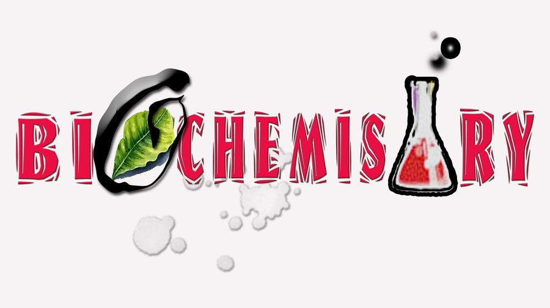
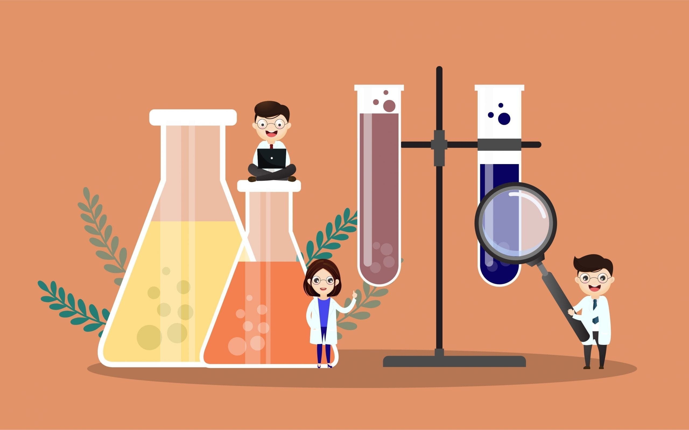

Biochemistry is a branch of science that explores the chemical
processes and substances within living organisms.
It provides a
fundamental understanding of life at the molecular level and plays a
crucial role in various scientific fields, including biology, medicine, and
biotechnology.
At its core, biochemistry investigates the structure, function, and
interactions of biomolecules such as proteins, nucleic acids,
carbohydrates, and lipids.
These biomolecules are the building blocks
of life and are responsible for the myriad of processes that occur
within cells, tissues, and organisms.

Proteins are essential macromolecules in biochemistry. They serve as
enzymes that catalyze
biochemical reactions, receptors that mediate
cell signaling, and structural components that give cells
their shape
and integrity. The structure of a protein is determined by its amino
acid sequence, and any
changes in this sequence can result in altered
protein function, potentially leading to disease.
Nucleic acids, such as DNA and RNA, store and transmit genetic
information. Understanding their structure and function is crucial in
genetics
and molecular biology. DNA is composed of nucleotide
building blocks and carries the genetic code that determines an
organism's characteristics.
RNA, on the other hand, acts as
a messenger molecule that translates the genetic code into proteins.
Carbohydrates are energy sources and structural components in
living organisms. They consist of simple sugars like glucose and
complex polysaccharides like cellulose. Carbohydrates play a key role
in metabolism, providing the energy needed for cellular processes
and serving as markers on the cell surface for communication and
recognition.
Lipids are diverse molecules that include fats, phospholipids, and
steroids. They are essential for cell membrane structure and function.
Additionally, lipids are involved in energy storage and as signaling
molecules in various physiological processes.
Biochemistry also explores the metabolic pathways that regulate the
conversion of molecules into energy and the synthesis of important
compounds. The study of metabolism is essential for understanding
how organisms extract energy from food and maintain their cellular processes.

Enzymes are biological catalysts that play a central role in
biochemical reactions. They increase the rate of reactions by lowering
the activation energy required for the reaction to occur. Enzymes are
highly specific, and their activity can be regulated by factors such as
temperature, pH, and the presence of cofactors.
Biochemistry has numerous applications in medicine and healthcare.
It is crucial for understanding diseases at the molecular level and
developing treatments.
For example, the field of pharmacology relies
on a deep understanding of biochemical pathways to design drugs
that target specific molecular processes. Diagnostic techniques
like
PCR (polymerase chain reaction) and ELISA (enzyme-linked
immunosorbent assay) are based on biochemistry principles and are
used for disease detection.
In biotechnology, biochemistry is used to engineer and produce
valuable products such as pharmaceuticals, biofuels, and genetically
modified organisms. Genetic engineering techniques, like
recombinant DNA technology, enable the manipulation of genes and
proteins
for various applications.
In conclusion, biochemistry is a multidisciplinary field that provides
insight into the molecular mechanisms of life. It explores the structure
and function of biomolecules, metabolic pathways, and the intricate
relationships between various cellular components. The knowledge
gained from biochemistry has far-reaching implications in fields such
as medicine, biotechnology, and agriculture, contributing to our
understanding of life and the development of innovative solutions to
complex biological challenges.